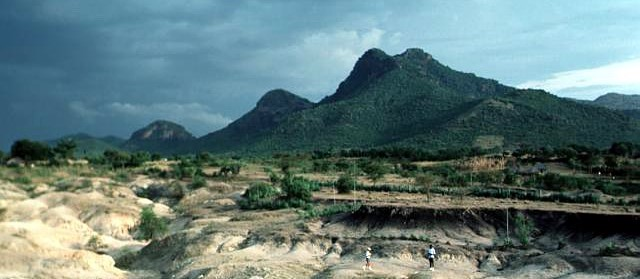

Sammensatt Vulkan
En sammensatt vulkan, eller en kompleks vulkan, er en vulkan
med mer enn én struktur. De blir dannet på grunn av endringer
i utbruddsmønsteret eller ved at det oppstår flere ventiler i
et område. Stratovulkaner kan danne komplekse vulkaner fordi
de kan overlappe hverandre fra eksplosive utbrudd, lavastrømmer,
pyroklastiske strømmer og flere utbrudd etter hverandre, slik at
det blir dannet flere topper og ventiler. Stratovulkaner kan også
forme en stor kaldera som blir fylt igjen med mange små
sinderkjegler og lavadomer, og det kan dannes krater på kanten
av kalderaen.
Selv om det er en forholdsvis uvanlig vulkantype er de spredt
over hele verden og gjennom hele den geologiske historie.